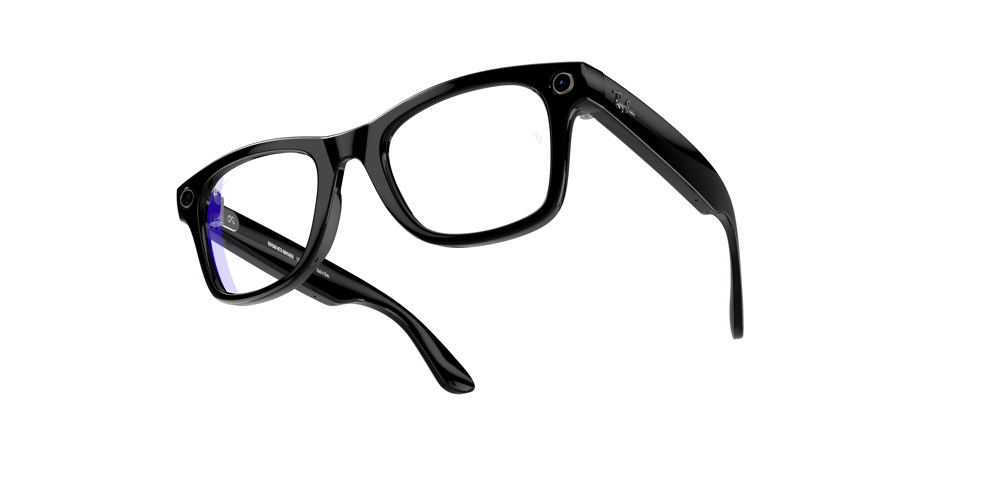

Novidades!
Aqui você vê as mais novas novidades!

A Meta, empresa de Mark Zuckerberg e dona do Facebook, anunciou o Orion, o seu primeiro par de óculos de realidade aumentada. A novidade foi compartilhada no Meta Connect 2024, evento em que outras novidades também foram anunciadas pela companhia.